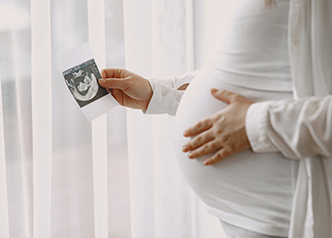

"Her doğum bir mucizedir. Amacımız, anne adayımızın korku ve endişelerden uzak, huzurla ve güvenle bebeğini kucağına aldığı o ilk anı en güzel hatıraya dönüştürmektir."


ADANA GEBELİK VE DOĞUM

Adana Gebelik Takibi ve Doğum: Hafta Hafta Süreç, Testler ve Doğum Yöntemleri
Gebelik, bir kadının yaşamında bedensel ve ruhsal olarak deneyimleyebileceği en olağanüstü yolculuktur. Pozitif bir gebelik testi ile başlayan bu heyecanlı süreçte, doğru bir Adana kadın doğum uzmanı ile yola çıkmak hem anne adayının kaygılarını giderir hem de bebeğin sağlıklı gelişimini güvence altına alır. Çukurova Üniversitesi Balcalı Hastanesi uzmanlık kökenli Op. Dr. Hülya Yetiş Sucu, 20 yıllık tecrübesiyle bu kutsal yolculukta binlerce ailenin mutluluğuna ortak olmuştur.
Sağlıklı bir gebelik yönetimi, olası risklerin erkenden tespit edilmesi ve anne-bebek odaklı bir takip planı oluşturulmasıyla mümkündür. İster normal fizyolojik bir süreç olsun ister riskli bir gebelik; hekiminizin yakın ilgisi ve modern teknolojinin sunduğu imkanlar en büyük destekçinizdir.

Hafta Hafta Gebelik Takibinde Neler Yapılır?
1. Trimester (1 - 12. Haftalar): Temellerin Atıldığı Dönem
Gebeliğin 5-6. haftalarında ilk ultrasonografi ile gebelik kesesi ve embriyonun rahim içindeki yerleşimi kontrol edilir. Kalp atımları dinlenir. Kan sayımı, tiroit fonksiyonları, kan grubu, bulaşıcı hastalık taramaları ve vitamin seviyeleri incelenir. 11-14. haftalarda bebeğin ense kalınlığı (NT) ölçümü ve burun kemiği değerlendirmesi eşliğinde ikili tarama testi yapılır. Arzu eden ailelerde anne kanından bebeğin genetik yapısını inceleyen Fetal DNA (NIPT) testi planlanır.
2. Trimester (13 - 27. Haftalar): Gelişim ve Detaylı Ultrason
16-18. haftalarda dörtlü tarama testi seçenekleri değerlendirilir. Bu dönemin en kritik basamağı 18-22. haftalar arasında yapılan detaylı (ayrıntılı) 4D renkli ultrason incelemesidir. Bu incelemede beyin odacıkları, yüz profili, kalp odacıkları, omurga, mide, böbrekler ve el-ayak parmakları tek tek taranır. 24-28. haftalarda ise gebelik şekerini tespit etmek amacıyla glukoz tarama testi uygulanır.
3. Trimester (28 - 40. Haftalar): Doğuma Hazırlık ve NST Takipleri
Bebeğin kilo alımı, plasentanın konumu, amnion sıvısının yeterliliği ve doğum kanalına iniş pozisyonu izlenir. 36. haftadan sonra haftalık NST (Non-Stres Test) kontrolleri ile bebeğin kalp atışları ve rahim kasılmaları kayıt altına alınır. Anne adayı ile doğum planı oluşturulur.
Doğum Yöntemleri: Sizin İçin En Doğru Seçenek Hangisi?
Normal Fizyolojik Doğum
Doğanın en muazzam sürecidir. Bebek doğum kanalından geçerken akciğerlerindeki sıvıyı boşaltır ve anneden faydalı florayı alarak bağışıklık sistemini güçlendirir. Anne doğumdan saatler sonra ayağa kalkabilir ve hızla bebeğini emzirmeye başlayabilir.
Epidural Normal Doğum (Prenses Doğum)
Doğum sancılarından korkan anne adayları için ideal bir çözümdür. Bel bölgesinden anestezi uzmanı tarafından yerleştirilen epidural kateter ile kasılma ağrıları hissedilmez ancak kas gücü korunur. Anne adayı dinlenmiş ve enerjik bir şekilde aktif ıkınma fazına geçer.
Sezaryen Doğum
Bebeğin ters durması, plasentanın doğum kanalını kapatması (plasenta previa), bebeğin aşırı iri olması, kordon sarkması veya annenin çatı darlığı gibi tıbbi gerekliliklerde uygulanan hayat kurtarıcı cerrahi yöntemdir. Estetik dikiş teknikleri ile sezaryen izi minimum düzeyde tutulur.
Klinik İmkanlarımız
Gebelik takiplerimiz Özel Klinik bünyesinde modern cihazlarla titizlikle yürütülmekte; doğumlarımız ise gelişmiş ameliyathaneleri ve yenidoğan yoğun bakım donanımına sahip tam donanımlı anlaşmalı sağlık kuruluşlarında güvenle gerçekleştirilmektedir.
Sıkça Sorulan Sorular
Soru: 4D renkli ultrason bebeğe herhangi bir zarar verir mi?
Hayır. Ultrason ses dalgaları prensibiyle çalışır ve radyasyon içermez. Anneye veya bebeğe hiçbir zararı bulunmamaktadır.
Soru: Hamilelikte cinsel ilişki güvenli midir?
Düşük tehdidi, kanama veya plasenta yerleşim anomalisi gibi tıbbi bir risk bulunmadığı takdirde hekiminizin onayıyla gebelikte cinsellik güvenlidir.
Soru: Doğum çantasını ne zaman hazırlamalıyız?
Genellikle 32. ile 34. gebelik haftaları arasında doğum çantasının anne ve bebek ihtiyaçlarını kapsayacak şekilde hazır bulundurulması önerilir.